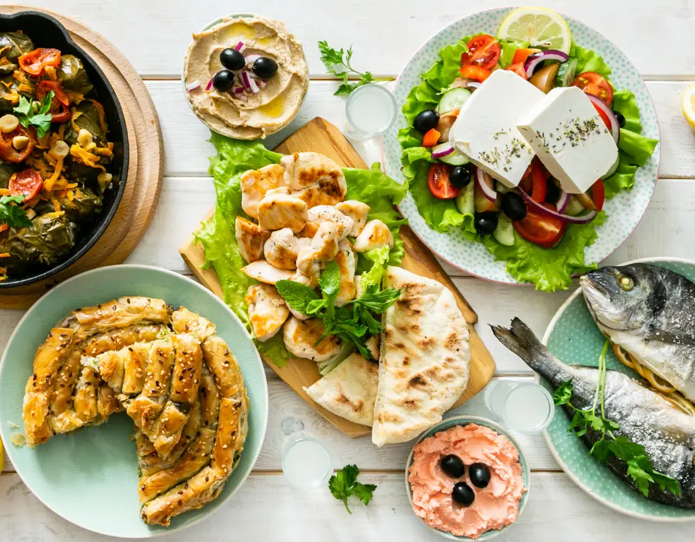
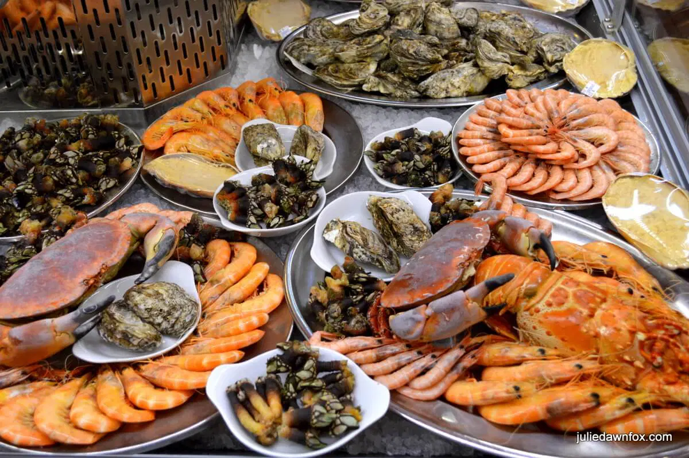
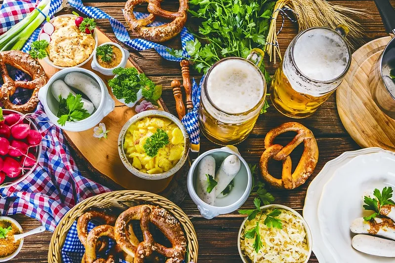
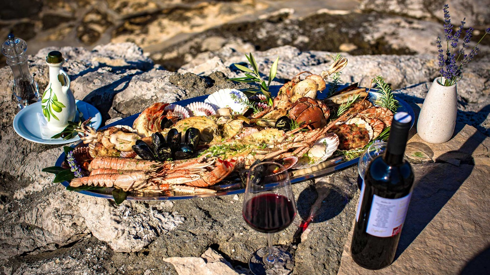

Ready to kill your crush on food?
Choose your cuisine craving

Swipe to have a
look at the
TOP 20
INTERNATIONAL CUISINES
in World's cuisines ranking
look at the
TOP 20
INTERNATIONAL CUISINES
in World's cuisines ranking

From classic pizzas to refined risottos, renowned for its diverse regional specialties, such as hearty pasta dishes, succulent meats, fresh seafood, and artisanal cheeses, all prepared with a focus on high-quality, seasonal ingredients and simple yet bold flavors.

From moussaka to souvlaki to baklava, there's no shortage of delicious and iconic dishes to savor, Greek cuisine never fails to impress us with its fresh and flavorful ingredients, as well as its use of traditional cooking techniques.

This cuisine indulges you in the vibrant and diverse flavors from the mouthwatering paella to the heavenly churros con chocolate. The flavors of cured ham and fresh seafood, paired with the country's famous wines and sangrias, Spain's cuisine is a feast for the senses.

From sushi to ramen, miso soup to tempura, discover the traditional techniques and modern twists that make Japanese cuisine so unique and enticing. With its emphasis on fresh, high-quality ingredients and balance of flavors, Japanese cuisine offers a delightful sensory experience that will leave you wanting more.

From the spicy curries of the north to the aromatic biryanis of the south, each region of India boasts a unique culinary heritage that is sure to tantalize your taste buds. Discover the vibrant colors Whether you're a vegetarian or a meat lover with exotic spices, and intricate flavors that make Indian cuisine so popular around the world.

From the beloved tacos to the famous guacamole, this vibrant cuisine has something for every palate. Learn about the rich and complex mole sauce, try the savory tamales, or satisfy your sweet tooth with the traditional churros.

Turkish cuisine is a vibrant fusion of Mediterranean and Middle Eastern influences. Know about succulent kebabs, aromatic pilafs, hearty stews, and creamy dips like hummus and baba ganoush, all infused with rich spices and herbs like cumin, coriander, and mint. Savor traditional sweets like baklava and Turkish delight, paired with strong coffee or sweetened tea.

Discover the melting pot of flavors that is American cuisine, from southern comfort foods like fried chicken and mac n' cheese, to Tex-Mex favorites like tacos and burritos, to iconic dishes like hamburgers and hot dogs.
Learn the richness of dishes like coq au vin, bouillabaisse, and cassoulet that have been perfected over centuries by world-renowned chefs. Indulge in the flaky goodness of croissants, the buttery richness of escargots, and the smooth decadence of crème brûlée.

Peru's cuisine is a reflection of blending Incan, Spanish, African, and Asian flavors. Use the tangy spiciness of ceviche, the smoky aroma of grilled anticuchos, and the comforting warmth of ají de gallina. with its unique ingredients, including colorful potatoes, quinoa, and rocoto peppers.

From spicy Sichuan hotpot to delicate Cantonese dim sum, Chinese cuisine is a diverse and flavorful feast for the senses. Savor the richness of Peking duck, indulge in the comfort of steaming hot noodle soup, or explore the zesty flavors of street food from all over China.

The cuisine offers an abundance of meat dishes such as churrasco, and feijoada, stew with pork and beef. It also boasts an array of tasty snacks, savory cheese bread, the famous caipirinha cocktail and the exotic Amazonian fruits.

Fresh seafood dishes bursting with Mediterranean flavors to hearty meat stews and sweet pastries, Portuguese food is examplary. Master the art of making famous Bacalhau (salt cod)indulge in the creamy goodness of Pastel de Nata (custard tart) or savor the spicy aroma of Piri Piri chicken.

Hearty stews, savory pierogis, and mouthwatering sausages with the iconic Polish dish, Bigos, to the delectable street food staple, Zapiekanka, Polish cuisine is a true celebration of comfort food. Have a look and master your cooking skills.

Indulge in classics like schnitzel, sauerkraut, and potato dumplings, or try something new like spätzle or käsespätzle, a cheesy noodle dish. From hearty sausages and stews to delicate pastries and desserts, German food is a treat for the senses.

Discover the rich tapestry of flavors, spices, and traditions in Indonesian cuisine - from the fiery heat of sambal to the sweet and savory balance of rendang. This cuisine makes you savor the aroma of aromatic herbs and exotic fruits in dishes like nasi goreng, gado-gado, and satay with the complex interplay of sweet, salty, sour, and spicy in every bite.

The classic dish of 'Peka,' slow-cooked meat and vegetables under a bell-shaped lid, or try the famous 'pašticada,' a beef stew simmered in a rich sauce. The local cheeses and wines, such as 'Pag cheese' and 'Plavac Mali,' perfectly complement any meal. With its unique blend of Mediterranean and Eastern European influences, Croatian cuisine is a culinary adventure

Succulent grilled meats, like the famous 'asado', in the cheesy delights of 'empanadas' paired with a glass of rich Malbec wine is an introduction to the wide food range. Learn and have a taste of Argentina, where every bite is a celebration.

Experience the explosion of flavors that is Korean cuisine from fiery kimchi to savory bulgogi. Try the deliciously crispy fried chicken and the comforting bibimbap and the refreshing rice wine or a sweet and satisfying bowl of patbingsu.Discover the taste of Korea!

Take a culinary trip to Vietnam and discover a world of bold and vibrant flavors with famous pho, a comforting noodle soup, or the fresh and crispy spring rolls. Indulge in the aromatic spices of the famous Bun Cha, or quench your thirst with a cup of deliciously sweet and creamy Vietnamese coffee. Come explore the deliciousness of Vietnam!
Reach Us
221B Baker's Street,
London, UK, +44
We would love to
know about your opinion!
Call Us
foodcrush.com
+44 98989 76767